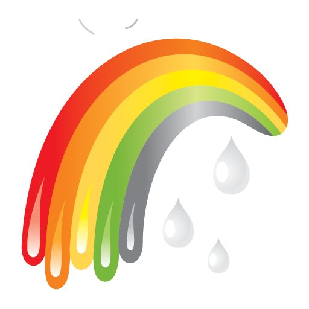

Lab: Pixel Art Maker
Choose Grid Size
Grid Height:
Grid Width:
Tools

Design Canvas
Tips:
Hold mouse to create a continous line.
Double click to remove changes.
After clicking the eraser, hold to use it.
Press submit to start a new canvas.